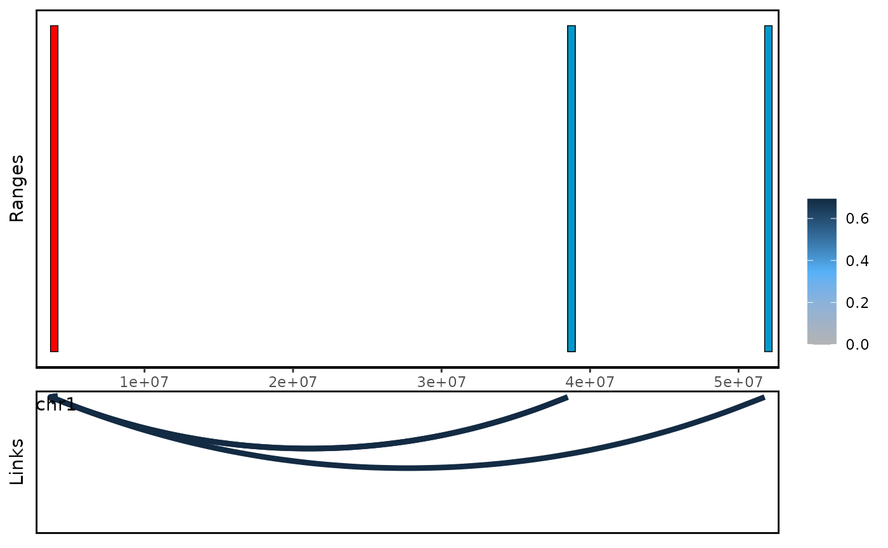

Introduction
This vignette provides a step-by-step guide to using the
linkSet package to analyze Hi-C/HiChIP data. We will use a
toy example to illustrate the main functions and workflows. Our goal is
to identify the enhancer-gene links in this example
We will use the following datasets as input:
- validPairs produced by HiC-Pro.
- Mouse embryo body enhancer data from enhancer atlas website.
- Gene annotation data from TxDb.Mmusculus.UCSC.mm10.knownGene pakcage.
We highly recommend you to use custom data instead of the example data provided in this vignette.
Setup
suppressPackageStartupMessages({
library(linkSet)
library(TxDb.Mmusculus.UCSC.mm10.knownGene)
library(org.Mm.eg.db)
library(Organism.dplyr)
library(InteractionSet)
})We use our custom function readvalidPairs to load the
example data. Firstly, we need to load into GInteractions
object.
hic_file <- system.file("extdata", "toyValidatePair",
package="linkSet")
gi <- readvalidPairs(hic_file)
#> Reading file...
#> Warning in system(paste("grep '^#' ", file), intern = TRUE): running command
#> 'grep '^#' /home/runner/work/_temp/Library/linkSet/extdata/toyValidatePair' had
#> status 1
#> Converting to GInteractions...
promoterGr <- withTxDb("mm10", function(src) {
genes <- Organism.dplyr::genes(src, columns = "symbol")
IRanges::promoters(genes, upstream = 10000)
})
#> creating 'src_organism' database...
#> Warning in valid.GenomicRanges.seqinfo(x, suggest.trim = TRUE): GRanges object contains 3 out-of-bound ranges located on sequences
#> chr4_JH584294_random, chr4_JH584292_random, and chr5_GL456354_random.
#> Note that ranges located on a sequence whose length is unknown (NA) or
#> on a circular sequence are not considered out-of-bound (use
#> seqlengths() and isCircular() to get the lengths and circularity flags
#> of the underlying sequences). You can use trim() to trim these ranges.
#> See ?`trim,GenomicRanges-method` for more information.
file_url <- c("http://www.enhanceratlas.org/data/download/enhancer/mm/Embryo_body.bed")
temp_file <- tempfile(fileext = ".bed")
download.file(file_url, temp_file, method = "curl")
enhancer <- rtracklayer::import(temp_file)Because the hic data only contains digist end, so we resize the
region to upstream 5kb and downstream 5kb. After that, we use
baitGInteractions to generate the linkSet
object.
gi <- resize(gi,10000,fix = "center")
ls <- baitGInteractions(gi,geneGr = promoterGr,peakGr = enhancer,"symbol")
ls
#> linkSet object with 40 interactions and 2 metadata columns:
#> bait seqnames_oe ranges_oe | anchor1.symbol
#> <character> <Rle> <IRanges> | <character>
#> [1] Sulf1 --- chr1 12785091-12785750 | Sulf1
#> [2] Prdm14 --- chr1 12785091-12785750 | Prdm14
#> [3] Bag2 --- chr1 12785091-12785750 | Bag2
#> [4] 4930444P10Rik --- chr1 12785091-12785750 | 4930444P10Rik
#> [5] Rdh10 --- chr1 12785091-12785750 | Rdh10
#> ... ... ... ... ... . ...
#> [36] Slco5a1 --- chr1 14496641-14497000 | Slco5a1
#> [37] Slco5a1 --- chr1 14496641-14497000 | Slco5a1
#> [38] Slco5a1 --- chr1 75286081-75286280 | Slco5a1
#> [39] Slco5a1 --- chr1 72687651-72687800 | Slco5a1
#> [40] Slco5a1 --- chr1 64040331-64041080 | Slco5a1
#> anchor2.name
#> <character>
#> [1] 12.2266622787328
#> [2] 12.2266622787328
#> [3] 12.2266622787328
#> [4] 12.2266622787328
#> [5] 12.2266622787328
#> ... ...
#> [36] 16.1891332694206
#> [37] 16.1891332694206
#> [38] 12.1079981422902
#> [39] 14.5003484893464
#> [40] 11.4785793668123
#> -------
#> regions: 36 ranges and 0 metadata columns
#> seqinfo: 66 sequences (1 circular) from mm10 genomeWhen we print the linkSet object, we can see the basic
information of the linkSet object. By default, we don’t
show the bait region. But you are interested in the bait region, you can
set showBaitRegion = TRUE.
showLinkSet(ls, baitRegion = TRUE)
#> linkSet object with 40 interactions and 2 metadata columns:
#> bait seqnames_bait ranges_bait seqnames_oe
#> [1] Sulf1 chr1 12682277-12692476 --- chr1
#> [2] Prdm14 chr1 13126964-13137163 --- chr1
#> [3] Bag2 chr1 33757596-33767795 --- chr1
#> [4] 4930444P10Rik chr1 16093126-16103325 --- chr1
#> [5] Rdh10 chr1 16095774-16105973 --- chr1
#> ... ... ... ... ... ...
#> [36] Slco5a1 chr1 12992451-13002650 --- chr1
#> [37] Slco5a1 chr1 12992451-13002650 --- chr1
#> [38] Slco5a1 chr1 12992451-13002650 --- chr1
#> [39] Slco5a1 chr1 12992451-13002650 --- chr1
#> [40] Slco5a1 chr1 12992451-13002650 --- chr1
#> ranges_oe | anchor1.symbol anchor2.name
#> [1] 12785091-12785750 | Sulf1 12.2266622787328
#> [2] 12785091-12785750 | Prdm14 12.2266622787328
#> [3] 12785091-12785750 | Bag2 12.2266622787328
#> [4] 12785091-12785750 | 4930444P10Rik 12.2266622787328
#> [5] 12785091-12785750 | Rdh10 12.2266622787328
#> ... ... . ... ...
#> [36] 14496641-14497000 | Slco5a1 16.1891332694206
#> [37] 14496641-14497000 | Slco5a1 16.1891332694206
#> [38] 75286081-75286280 | Slco5a1 12.1079981422902
#> [39] 72687651-72687800 | Slco5a1 14.5003484893464
#> [40] 64040331-64041080 | Slco5a1 11.4785793668123Diagnose and filter links
Now, we can run diagnoseLinkSet to check the distance distribution and inter/intra interaction percentage.
diagnoseLinkSet(ls)
#> `stat_bin()` using `bins = 30`. Pick better value with `binwidth`.#> linkSet object with 40 interactions and 4 metadata columns:
#> bait seqnames_oe ranges_oe | anchor1.symbol
#> <character> <Rle> <IRanges> | <character>
#> [1] Sulf1 --- chr1 12785091-12785750 | Sulf1
#> [2] Prdm14 --- chr1 12785091-12785750 | Prdm14
#> [3] Bag2 --- chr1 12785091-12785750 | Bag2
#> [4] 4930444P10Rik --- chr1 12785091-12785750 | 4930444P10Rik
#> [5] Rdh10 --- chr1 12785091-12785750 | Rdh10
#> ... ... ... ... ... . ...
#> [36] Slco5a1 --- chr1 14496641-14497000 | Slco5a1
#> [37] Slco5a1 --- chr1 14496641-14497000 | Slco5a1
#> [38] Slco5a1 --- chr1 75286081-75286280 | Slco5a1
#> [39] Slco5a1 --- chr1 72687651-72687800 | Slco5a1
#> [40] Slco5a1 --- chr1 64040331-64041080 | Slco5a1
#> anchor2.name inter_type distance
#> <character> <character> <integer>
#> [1] 12.2266622787328 inter 98044
#> [2] 12.2266622787328 inter 346643
#> [3] 12.2266622787328 inter 20977275
#> [4] 12.2266622787328 inter 3312805
#> [5] 12.2266622787328 inter 3315453
#> ... ... ... ...
#> [36] 16.1891332694206 inter 1499270
#> [37] 16.1891332694206 inter 1499270
#> [38] 12.1079981422902 inter 62288630
#> [39] 14.5003484893464 inter 59690175
#> [40] 11.4785793668123 inter 51043155
#> -------
#> regions: 36 ranges and 0 metadata columns
#> seqinfo: 66 sequences (1 circular) from mm10 genomeIntrachromosomal interaction and long distance interaction are likely be noise, so we filter them.
ls <- countInteractibility(ls)
#> Warning in countInteractibility(ls): No intra-chromosomal interactions found.
#> Please run this function before you filterLinks.
ls <- filterLinks(ls,filter_intra = TRUE, filter_unannotate = TRUE, distance = 50000000)Duplicated links are associated with contact frequency, so it’s a good idea to count duplicated links.
ls <- countInteractions(ls)
orderLinks(ls,by = "count",decreasing = T)
#> linkSet object with 23 interactions and 5 metadata columns:
#> bait seqnames_oe ranges_oe | anchor1.symbol
#> <character> <Rle> <IRanges> | <character>
#> [1] Sulf1 --- chr1 12785091-12785750 | Sulf1
#> [2] Prdm14 --- chr1 12785091-12785750 | Prdm14
#> [3] Bag2 --- chr1 12785091-12785750 | Bag2
#> [4] 4930444P10Rik --- chr1 12785091-12785750 | 4930444P10Rik
#> [5] Rdh10 --- chr1 12785091-12785750 | Rdh10
#> ... ... ... ... ... . ...
#> [19] Kcnb2 --- chr1 12785091-12785750 | Kcnb2
#> [20] Clk1 --- chr1 12785091-12785750 | Clk1
#> [21] Nif3l1 --- chr1 12785091-12785750 | Nif3l1
#> [22] Slco5a1 --- chr1 14496641-14497000 | Slco5a1
#> [23] Slco5a1 --- chr1 39924881-39925280 | Slco5a1
#> anchor2.name inter_type count distance
#> <character> <character> <integer> <integer>
#> [1] 12.2266622787328 inter 1 98044
#> [2] 12.2266622787328 inter 1 346643
#> [3] 12.2266622787328 inter 1 20977275
#> [4] 12.2266622787328 inter 1 3312805
#> [5] 12.2266622787328 inter 1 3315453
#> ... ... ... ... ...
#> [19] 12.2266622787328 inter 1 2496933
#> [20] 12.2266622787328 inter 1 45643546
#> [21] 12.2266622787328 inter 1 45654830
#> [22] 16.1891332694206 inter 1 1499270
#> [23] 14.6843556168742 inter 1 26927530
#> -------
#> regions: 24 ranges and 0 metadata columns
#> seqinfo: 66 sequences (1 circular) from mm10 genomeWe can notice that there is a significant link strength between
Sulf1 and chr1:12785091-12785750.
Cross gene links and visualization
Enhancers that regulate multiple genes are biologically meaningful.
ls <- crossGeneEnhancer(ls)
ls <- orderLinks(ls,by = "crossFreq",decreasing = T)
ls
#> linkSet object with 23 interactions and 6 metadata columns:
#> bait seqnames_oe ranges_oe | anchor1.symbol
#> <character> <Rle> <IRanges> | <character>
#> [1] Sulf1 --- chr1 12785091-12785750 | Sulf1
#> [2] Prdm14 --- chr1 12785091-12785750 | Prdm14
#> [3] Bag2 --- chr1 12785091-12785750 | Bag2
#> [4] 4930444P10Rik --- chr1 12785091-12785750 | 4930444P10Rik
#> [5] Rdh10 --- chr1 12785091-12785750 | Rdh10
#> ... ... ... ... ... . ...
#> [19] Kcnb2 --- chr1 12785091-12785750 | Kcnb2
#> [20] Clk1 --- chr1 12785091-12785750 | Clk1
#> [21] Nif3l1 --- chr1 12785091-12785750 | Nif3l1
#> [22] Slco5a1 --- chr1 14496641-14497000 | Slco5a1
#> [23] Slco5a1 --- chr1 39924881-39925280 | Slco5a1
#> anchor2.name inter_type count distance crossFreq
#> <character> <character> <integer> <integer> <integer>
#> [1] 12.2266622787328 inter 1 98044 21
#> [2] 12.2266622787328 inter 1 346643 21
#> [3] 12.2266622787328 inter 1 20977275 21
#> [4] 12.2266622787328 inter 1 3312805 21
#> [5] 12.2266622787328 inter 1 3315453 21
#> ... ... ... ... ... ...
#> [19] 12.2266622787328 inter 1 2496933 21
#> [20] 12.2266622787328 inter 1 45643546 21
#> [21] 12.2266622787328 inter 1 45654830 21
#> [22] 16.1891332694206 inter 1 1499270 1
#> [23] 14.6843556168742 inter 1 26927530 1
#> -------
#> regions: 24 ranges and 0 metadata columns
#> seqinfo: 66 sequences (1 circular) from mm10 genomeWe can use plot_genomic_ranges to visualize the cross
gene links.
plot_genomic_ranges(ls,showOE = oe(ls)[1])
We can also choose to visualze the bait center region.
plot_genomic_ranges(ls,showBait = "Ncoa2")
plot_genomic_ranges(ls,showBait = "Sulf1")